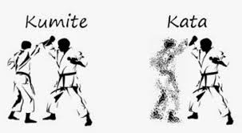
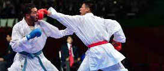

Histoy of Shotokan Karate
Shotokan Karate is a traditional Japanese martial art that was founded by Gichin Funakoshi.
Funakoshi was born in Okinawa in 1868 and began training in traditional Okinawan martial
arts at a young age.
He became a skilled practitioner and eventually moved to Japan to spread the teachings of Karate.
This practice of karate has made its way down to me,
a second degree black belt in Shotokan karate. I have been practiceing for over 7 years now and
in this this website i will help you learn
from the comfot of your own home just note that if you break anything i am not responsible you were just being irresponsible
like a routine, kihon is the basics (all of your blocking punching and kicking) and Kumite, this is the fighting part of karate sometimes its free sparing
and others it's the practice of some routines. You can find sertain katas, kihon scripts and kumite techniques with the
corisponding bottons in the top right corner of this page, these will come with videos to show you how to do it.
Kata
 kihon
kihon
Kumite